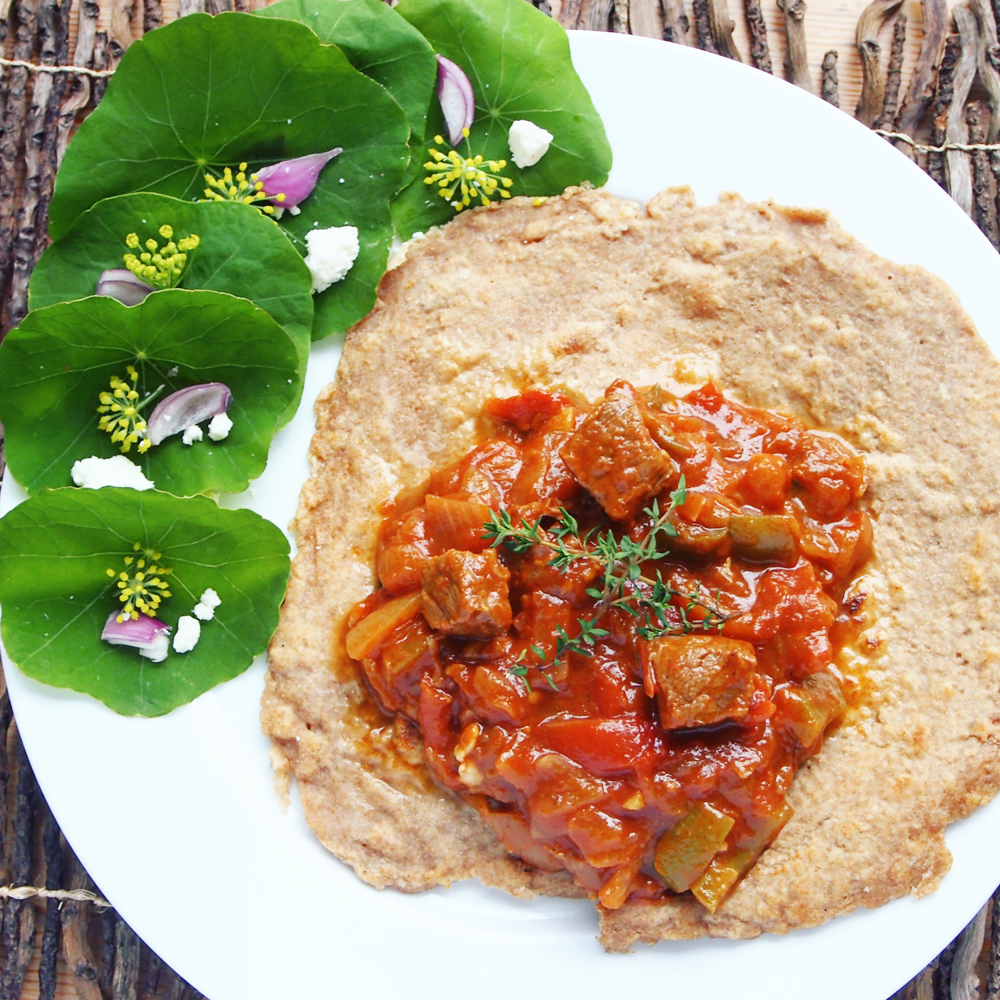

Damaa

Description
Beef and vegetable stew with herbs and spices, typically served with rice or gorassa.
Ingredients
- 6 onions
- 4 tbsp tomato paste
- 1/3 cup oil
- 3 cloves of crushed garlic
- 250g beef steak
- 3 cups water
- 500g lean minced beef
- 3 tomatoes
- 1/2 green pepper
- 1 tsp salt
- 1 tsp cardamom
- 1 tsp cinnamon
Steps
- Chop onions and put in pot and fry in oil at medium heat.
- Keep covered, stirring occasionally.
- Add water and cover, leaving on medium heat for 5-10 minutes until water is almost evaporated.
- Lightly blend onions and return to pot and add chopped tomatoes.
- Chop steak into small pieces and add to pot with chopped pepper, salt, cardamom and cinnamon.
- Cover and leave for 3 minutes.
- Add tomato paste and stir, adding water until smooth and runny.
- Cover and leave to simmer for 10 minutes adding more water occasionally.
- Stir in crushed garlic.
- Pour over gorraasa and serve warm (click here for gorassa recipe).